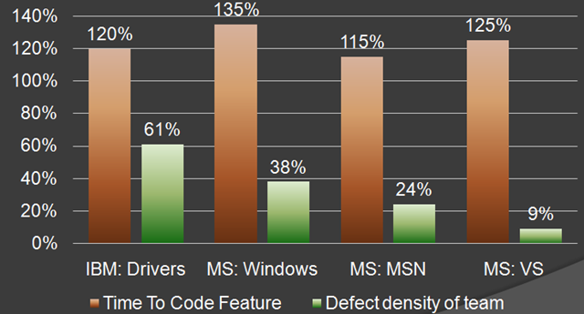

What is main property of bad code?
It's untestable
Kent Beck's rules of simple code
-
1. Runs all the tests
-
2. Contains no duplication
-
3. Express the intent of programmer
-
4. Minimizes the number of classes and methods
Given in order of importance
“
The degree to which you know how your software behaves is the degree to which you have
accurately tested it.
” - Max Kanat-Alexander
Arrange Act Assert
Presented by Milan Popović / @komita1981
Me
PHP developer
Work for Navus Consulting
I like to learn and share knowledge
Active member of PHP Srbija
What is testing?
Testing is the activity of finding out whether a piece of code produces the intended behavior
What do people think about testing?


Time consuming
Testing is hard
Steep learning curve
Don’t make anybody any money
What testing really is?
Prove you've done your work
Reduce number of bugs
Facilitate change
Help you make better code design - easier to maintain
Ensures stable, long lasting application
Improve understanding how clients are going to use your code
Enhance security
Provide free documentation
Automated testing
When I say testing I mean AUTOMATED testing
Automated testing is fun and a key point for software quality
Manual Testing
Time consuming
Slow
Expensive
Unreliable
Boring
Take away my people, but leave my factories, and soon grass will grow on the factory floors.
Take away my factories, but leave my people, and soon we will have a new and better factory.- Andrew Carnegie
Take away my source code, but leave my test suites, and soon we will have a new and better codebase.
Test types
Acceptance (end-to-end)
Test as if end user would use the whole system/feature
Integration
Test how different parts of system work together
Unit
Test single unit of code - mock all dependencies

The higher we go - fewer number of tests, slower feedback, higher cost
Google team suggest
- E2E - 10 %
- Integration - 20%
- Unit - 70%
What is unit testing?
“
A unit test is a piece of a code (usually a method) that invokes another piece of code and
checks the correctness of some assumptions after- ward. If the assumptions turn out to be wrong,
the unit test has failed. A unit is a method or function.
” - Roy Osherove
A software testing method to test individual unit of source code - a method in class or a piece of code
The purpose of unit testing is not for finding bugs
Specification for the expected behaviours of the code under test
3 A of Unit testing
Arrange objects, creating and setting them up as necessary.
Act on an object
Assert that something is as expected
Arrange = Setup
Act = Poke
Assert = Verify
public function testSuccessful()
{
// ARRANGE
$d = $this->prophesize('\SomeNamespace\SomePackage\SomeDriverInterface');
$driver->doSomething()->shouldBeCalled()->willReturn('value');
$testedClass = new TestedClass($driver);
// ACT
$testResult = $testedClass->testedMethod();
// ASSERT
$this->assertSomething($expectedResult, $testResult);
}
Write unit tests before or after code?
After - You test what you code - Test Last
Development Driven Testing - DDT
Before - You code what you test - Test First
Test Driven Development - TDD

The Three Laws of TDD
- You may not write production code until you have written a failing unit test
- You may not write more of a unit test than is sufficient to fail
- You may not write more production code than is sufficient to pass the currently failing test

IBM & Microsoft - TDD - 20-40% longer to complete but 40-90% fewer bugs in production
By 2022 it will be not be possible to get a professional programming job if you do not practice TDD routinely - Allan Kelly
Testing doubles
- Dummy
- Fake
- Stub
- Mock
- Spy
Dummy
Objects are passed around but never actually used
Passed around for typehinting
No behaviour
class CustomerCardPrinter
{
private $printer;
private $customer;
public function __construct(PrinterInterface $printer, CustomerInterface $customer)
{
$this->printer = $printer;
$this->customer = $customer;
}
public function print()
{
if (! $this->printer->isAvailable()){
return false;
}
$customerName = $customer->getName();
// some code goes here
}
}
class CustomerCardPrinterTest
{
public function testPrinterNotAvailable()
{
$printer = $this->prophesize('\SomeNamespace\SomePackage\PrinterInterface');
$printer->isAvailable()->willReturn(false);
$customer = $this->prophesize('\SomeNamespace\SomeOtherPackage\CustomerInterface');
$customerCardPrinter = new CustomerCardPrinter($printer->reveal(), $customer->reveal());
$printResult = $customerCardPrinter->print();
$this->assertFalse($testResult);
}
}
Fake
The output of the method isn’t important
interface PrinterInterface
{
public function isAvailable();
}
class Printer implements PrinterInterface
{
public function isAvailable()
{
// some code goes here
}
}
class FakePrinter implements PrinterInterface
{
public function isAvailable()
{
return true;
}
}
Stub
Has (basic) behaviour but no expectations
It does not matter how many times a method is called - Doesn't have to be called
Promises it will always return the same thing (willReturn())
class CustomerCardPrinter
{
private $printer;
private $customer;
public function __construct(PrinterInterface $printer, CustomerInterface $customer)
{
$this->printer = $printer;
$this->customer = $customer;
}
public function print()
{
if (! $this->printer->isAvailable()){
return false;
}
$customerName = $customer->getName();
// some code goes here
}
}
class CustomerCardPrinterTest
{
public function testSuccessfulPrint()
{
$printer = $this->prophesize('\SomeNamespace\SomePackage\PrinterInterface');
$printer->isAvailable()->willReturn(true);
$customer = $this->prophesize('\SomeNamespace\SomeOtherPackage\CustomerInterface');
$customer->getName()->willReturn('SomeName');
$customerCardPrinter = new CustomerCardPrinter($someDriver->reveal(), $dummyPrinter->reveal());
$printResult = $customerCardPrinter->print();
$this->assertTrue($expectedResult, $testResult);
}
}
Mock
Define predictions (shouldBeCalled()), not promises
Describing what will happen in the future
Keeps track of method calls and their arguments
Validates method calls given a certain set of expectations
class CustomerCardPrinter
{
private $printer;
private $customer;
public function __construct(PrinterInterface $printer, CustomerInterface $customer)
{
$this->printer = $printer;
$this->customer = $customer;
}
public function print()
{
if (! $this->printer->isAvailable()){
return false;
}
$customerName = $customer->getName();
// some code goes here
}
}
class CustomerCardPrinterTest
{
public function testSuccessfulPrint()
{
$printer = $this->prophesize('\SomeNamespace\SomePackage\PrinterInterface');
$printer->isAvailable()->shouldBeCalled()->willReturn(true);
$customer = $this->prophesize('\SomeNamespace\SomeOtherPackage\CustomerInterface');
$customer->getName()->shouldBeCalled()->willReturn('SomeName');
$customerCardPrinter = new CustomerCardPrinter($someDriver->reveal(), $dummyPrinter->reveal());
$printResult = $customerCardPrinter->print();
$this->assertTrue($expectedResult, $testResult);
}
}
Spy
Records behaviour
Describing what has happened in the past
Assertions happen afterwards (shouldHaveBeenCalled())
function it_notifies_an_attached_subscriber()
{
// arrange
$parser = new ParserSubject;
$event = $this->prophesize('Markdown\Event\Event')->reveal();
$subscriber = $this->prophesize('Markdown\Parser\Subscriber')->reveal();
// act
$parser->notify($event);
// assert
$subscriber->onChange($event)->shouldHaveBeenCalled();
}

1. Try with writing tests after writing the code
2. When you get confidence try to write tests before the code
3. Treat test like your code - keep it "clean"
- Be descriptive about what you are testing
- Do not duplicate test code
- Do not make tests complex
4. Number of asserts in a test ought to be minimized
5. Use Virtual Environments

6. Run tests often
7. Test Boundary Conditions
8. Use test saboteurs (Humbug project)
9. Use test coverage

Test branch coverage not only code coverage
sampleMethod()
{
if (a < 5 and b > 10){
return a + b;
}
return $a - $b;
}
10. Test before refactoring
11. Write unit tests for each bug you are going to fix
12. Think twice before using New Operators - new ClassName()
13. Think twice before using statics - SomeClass::someMethod()
14. Avoid endless "anding" - Breaking SRP
15. Avoid using switch-case often - use design patterns instead
16. Avoid using too many dependencies - max 4 dependencies
17. Avoid logic in constructor - only assign variables
17. Do not break Law of Demeter
if ($account->getUser()->getRole()->IsAdmin()) {
return false;
}
18. Do Not Mock What You Do not Own
19. Use data providers
/**
* @dataProvider getSuccessfulAddData
*/
public function testSuccessfulAdd($a, $b, $result)
{
$this->assertEquals($result,
$this->calculator->add($a, $b));
}
public function getSuccessfulAddData()
{
return [
['a' => 1, 'b' => 2, 'result' => 3],
['a' => 2, 'b' => 1, 'result' => 3],
['a' => 0, 'b' => 1, 'result' => 1],
['a' => 1, 'b' => 0, 'result' => 1],
];
}
20. Use continuous integration server
21.

22. Programming by Wishful Thinking
23. Allow queries expect commands
24. Before asserting through loop use assertCount
25. Mock Interfaces Not Implementations
Once you start testing You wont want to write code without tests again
You are not good developer if you are not good tester
Writing code that is testable encourages best practices - such as SOLID
Quality is everyone’s responsibility — especially ours - developer’s
Testing is fun :-)

Once you start testing You wont want to write code without tests again
You are not good developer if you are not good tester
Writing code that is testable encourages best practices - such as SOLID
Quality is everyone’s responsibility — especially ours - developer’s
Testing is fun :-)


Resources
- Php tests tips
- Unit test prez
- Cost of tdd
- Sebastian Bergmann in Atlanta
- F.I.R.S.T Principles of Unit Testing
- First principles
- Prag prog blog
- How Often Should You Run Your JUnit Tests?
- Daed blog
- Salesforce blog
- Google testing blog
- Unit testing blog
- Testing doubles
- Martin Fowler about XUnit
- Notes on designing through mocking
- Wishful Programming
- That's Not Yours
- Testing and you
{kind=link}
{kind=link}
{kind=link}
{kind=link}
{kind=link}
{kind=link}
{kind=link}
{kind=link}
{kind=link}
{kind=link}
{kind=link}
{kind=link}
{kind=link}
{kind=link}